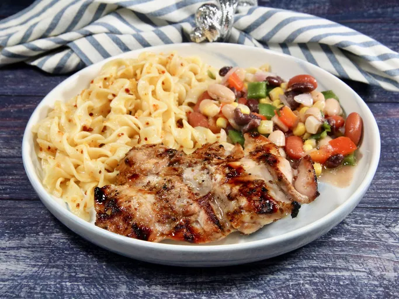

Unbelievable Chicken

The cooked Unbelievable Chicken dish!
Ingredients:
- ¼ cup cider vinegar
- 3 tablespoons prepared coarse-ground mustard or to taste
- 3 cloves garlic, peeled and minced
- 1 lime, juiced
- ½ lemon, juiced
- ½ cup brown sugar or to taste
- 1 ½ teaspoons salt or to taste
- ground black pepper to taste
- 6 tablespoons olive oil
- 6 skinless, boneless chicken breast halves
Steps:
- Mix cider vinegar, mustard, garlic, lime juice, lemon juice, brown sugar, salt,
and pepper
together in a large glass or ceramic bowl.
Whisk in olive oil. Add chicken and toss evenly
to coat.
Cover, and marinate in the refrigerator for 8 hours to overnight.
- Preheat an outdoor grill for high heat.
- Lightly oil the grill grate.
Place chicken on the preheated grill, and cook 6 to 8 minutes
per side, until juices run clear.
Discard any remaining marinade.
Home